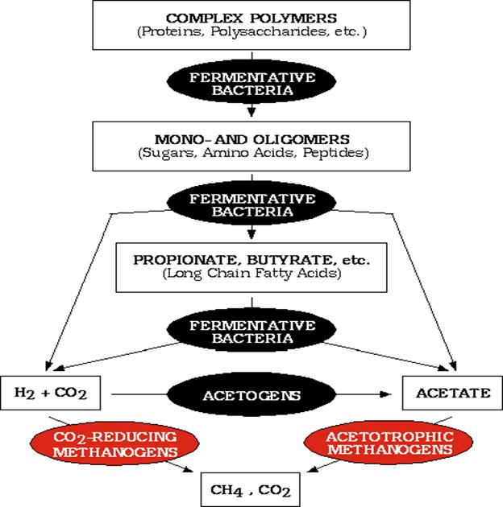

AMBE 101 :: Lecture 27 :: BIOGAS PRODUCTION

BIOGAS (Methane)
Biogas is mixture of methane (50-60 per cent), CO2 (30 – 40 per cent), hydrogen (5-10 per cent), H2S and nitrogen (traces), produced from anaerobic digestion of animal, plant wastes or any cellulose containing waste material. The digester used for biogas production is called a Biogas plant. A typical biogas plant using cowdung as a raw material consists of: (a) digester and (b) gas holder. The digesters are either of (a) batch type which are filled once, sealed and emptied when the raw materials stop producing gas or (b) continuous type which are fed with a definite quantity of waste at regular intervals so that gas production is continuous and regular. The nature of fermentation in the digester is anaerobic
Methane production
Involves three process viz., hydrolysis, acidification and methonization
- Four different groups of organisms are involved
- Hydrolytic bacteria -catabolises carbohydrates,proteins, lipids and other components of biomass into fatty acids,H2 and CO2
- H2 producing acetogenic bacxteria :Catabolises fatty acids, and the neutral ebd products of I group into acetate,CO2 and H2
- Homoacetogenic bacteria : Synthesize acetate using H2,CO2 and formate
- Methanogenic bacteria : Utilizes acetate,CO2,H2 to produce methane
The first group of bacteria includes facultative as well as strict anaerobes like Cellulomonas, Bacillus, Eubacterium etc.

Methanogenic phase
- It is a strict anaerobic phase and during this phase organic Carbon is converted to microbial mass, CO2 and methane.
- These bacteria are sensitive to pH and optimum is 6.8- 7.2. Drop in pH leads to inhibition of methanogenesis
- Methanobacterium, Methanomicrobium, Methanococcus, Methanosarcina
Alcohol production
Production of ethyl alcohol from sugary materials is one of the oldest known microbiological processes. Alcohol is an important solvent and raw material used in a variety of chemical industries. Although today industrial alcohol is also produced synthetically from ethylene, production of alcohol by fermentation of cheap sugary materials such as molasses by yeast is still an important industry.
For ethyl alcohol production, selected strains of Saccharomyces cerevisae are employed since all the strains are not equally efficient. The alcohol tolerance and sugar tolerance are important criteria used in the selection of yeast strains. Strains tolerant to high sugar and alcohol concentration are desired. The raw material generally used is either crude cane molasses or best molasses which contain about 50 per cent fermentable sugars. The production process involves the dilution of molasses to a suitable sugar concentration (15- 16 per cent sugars), addition of small quantity of nitrogen source (urea, ammonium sulphate or ammonium phosphate), adjustment of pH to about 5.0 and the addition of an actively growing yeast culture. The fermentation is carried out in big deep tanks of steel or stainless steel. The fermentation is allowed to continue for about 24 – 36 h at 250C to 300C after which the cells are allowed to settle. The fermented mash is then distilled and passed through rectifying columns to recover ethyl alcohol. A large amount of carbon-di oxide is also produced during the fermentation which is purified and compressed. The yield of ethyl alcohol is about 50 per cent of the fermentable sugar concentration. Further purification of ethyl alcohol is done by fractional distillation. In some distilleries, the yeast is recovered and used as animal feed while in most, it is discarded into the effluents, a procedure that is very undesirable.
In recent years because of the possibility of using ethyl alcohol as a fuel supplement and a chemical feed stock, there is increased interest in increasing production but at a cheaper and economical rate. For this, a variety of improvements in the traditional batch fermentation have been described in literature. Among these, the one that has attracted attention is the cell recycle technique which does not involve much additional expenditure. Basically, the technique involves the reuse of cell mass that is produced during the fermentation. It has been found that by doing so, about 5-10 per cent of the substrate which would have been otherwise used for cell growth is saved in addition to a great saving in the cost of inoculum and time. By using recycling technology, fermentation time has been drastically reduced from 24- 36 hours in a batch fermentation to as low as 5-6 hours.
Distilled Alcoholic Beverages
Whisky, rum, gin, brandy and vodka, are all products of alcoholic fermentation of different raw materials such as grains, molasses, potatoes and fruits are distilled products containing higher content of alcohol than either wine or beer. In principle, production of these alcoholic beverages is similar to the production of industrial alcohol. The quality of the alcohol produced and used for the production of these beverages depends on the type of secondary fractional alcohol distillation. It is essential to derive a pure spirit for the production of these beverages.
Whisky is traditionally produced from the fermentation of grain mash, rum from molasses, brandy from grape wines and vodka from potatoes. The flavour and aroma are introduced into the purified alcohol during the blending process. Sometimes, these alcoholic beverages are allowed to age for long periods in wooden casks before they are consumed.
| Download this lecture as PDF here |